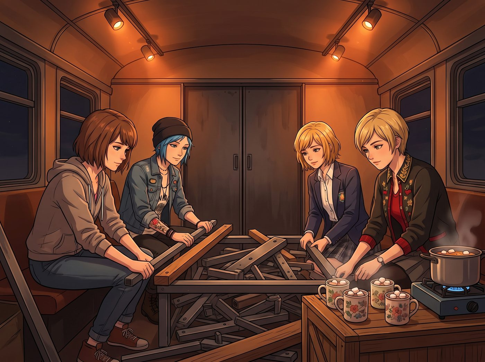

第一張桌子

車廂厚重的滑門在身後「哐當」一聲合上，將初夏夜風的微涼徹底隔絕在外。
車廂頂部剛拉好的軌道射燈投下溫暖的橘黃色光束，照亮了打磨得泛著深琥珀色光澤的老橡木地板。空氣中瀰漫著木蠟油的清香，以及剛從小瓦斯爐上煮滾的法芙娜熱可可散發出的濃郁巧克力與肉桂香氣。
Kate 將四只印著小碎花的大陶杯端到臨時鋪設的木箱茶几上，每杯上面都浮著兩顆烤得微焦、軟糯膨脹的白棉花糖：「小心燙喔，我多加了一點燕麥奶和一小撮海鹽。」
「上帝保佑大天使，」Chloe 接過馬克杯狠狠灌了一大口，被燙得直哈氣，上唇立刻沾上了一圈滑稽的白鬍子奶泡，「媽的……這口熱可可簡直能直接給我的心臟點火。」
Victoria 捧著杯子，優雅地抿了一小口，原本緊繃了一整天的肩膀終於微微放鬆下來，但目光在掃到車廂中央那一堆沉重的散裝零件時，眉頭又習慣性地挑了起來：「好了，趁著多巴胺分泌的高峰期，把那張堆在中央的巨型怪物解決掉。」
那是 Chloe 從舊造船廠廢料庫裡「搶救」回來的核心大件——一張即將組裝的重型複合多功能工作台。
四個人把杯子放在一旁，默契地捲起袖子，開啟了工坊內部的第一場協同組裝。
一、巨型橡木檯面的落位
檯面是一整塊厚達 60 毫米、由老海軍船塢拆卸下來的實心拼花硬質白橡木，重達四十多公斤。
Chloe 咬著牙發力，手臂線條緊繃，扛起沉重的一端；Victoria 毫不猶豫地褪下羊絨風衣，戴上防滑手套抓住另一端，兩人合力將巨木平穩架在粗壯的鑄鐵 H 型鋼腿架上。
「別急著上螺栓，」Victoria 迅速掏出磁吸式水平儀拍在木板正中央，綠色氣泡微微偏左，「左後側墊片加厚 1.5 毫米，否則 Max 以後在上面調製定影液會全部流到地溝裡。」
二、核心機械夾具的硬核固定
Chloe 鑽進工作台下方，手裡握著大號棘輪扳手，將四個 M16 重型地腳螺栓死死鎖緊在車廂底部的鋼樑加強筋上。
接著是工作台的靈魂——一台由英國 Record 公司在 1960 年代製造的重型快速釋放木工台鉗，以及一台 6 吋鑄鋼旋轉底座機械虎鉗。
隨著扳手「咔噠、咔噠」沉悶有力的咬合聲，兩台深藍色的鐵傢伙穩如磐石地咬死在工作台兩端。Chloe 拍了拍冰冷沉重的鑄鐵手柄，咧嘴大笑：「搞定！就算在上面砸碎一整台發動機缸體，這張桌子也絕不會晃哪怕一微米。」
三、精密工具懸掛與暗房抽屜
Max 拿著螺絲刀，在工作台後方的多孔防潮掛板上安裝工具卡座。她把 Victoria 送給 Chloe 的那套瑞士黑檀木刻刀、數顯卡尺、黃銅劃線規以及各類微型銼刀，按照從大到小、光影視覺最舒適的順序整齊掛好。
Kate 則用軟布擦拭著工作台下方的深抽屜，在底層鋪上防潮軟木墊，將草本乾燥工具、修枝剪以及為未來孩子們準備的安全雕刻刀分門別類碼放整齊。
晚上九點半，最後一顆黃銅固定螺絲旋緊到位。
整張長達 2.4 米的重型多功能工作台在暖黃色的射燈下傲然挺立。經過歲月風霜的橡木檯面帶著天然深沉的木紋，邊緣鑲嵌著一條用於快速測量的黃銅刻度尺，鑄鐵虎鉗泛著剛硬的深藍冷光，而上方整齊排列的工具在木板上投下錯落有致的影子。
這不僅僅是一張工作台，更是整間工坊跳動的心臟。
四個人累得靠在剛剛搬進來的舊皮質長沙發上，肩膀挨著肩膀，重新端起已經微涼的熱可可。
「第一張桌子誕生了。」Max 捧著杯子，黑框眼鏡後的眼睛彎成溫柔的月牙，望著眼前這張凝聚了四個人心血的巨木工作台。
「沒錯，」Chloe 仰頭倒在沙發靠背上，長腿伸得老長，手裡轉著那把熟悉的黑檀木小刀，眼神裡滿是光彩，「明天起，不管是要修理老皮卡的化油器、裁切大畫幅相紙、雕刻花盆木箱，還是幫名媛給古董珠寶除鏽……這裡全都能搞定。」
「前提是——」Victoria 抿著可可，嘴角勾起一抹極其柔和卻依然傲嬌的淺笑，指尖輕輕敲了敲木桌邊緣，「Price 工匠每天下班前，必須把桌面的木屑和機油擦得能照出妳的藍頭髮為止。」
車廂裡頓時爆發出一陣歡快的笑聲。
窗外，黃銅招牌在夜色中靜靜發光，常春藤在微風中悄悄扎根；而車廂內，溫暖的燈光照亮了堅固的工作台與相視而笑的四個女孩，將波特蘭這個寧靜的夏夜，填滿了屬於未來的踏實與期許。